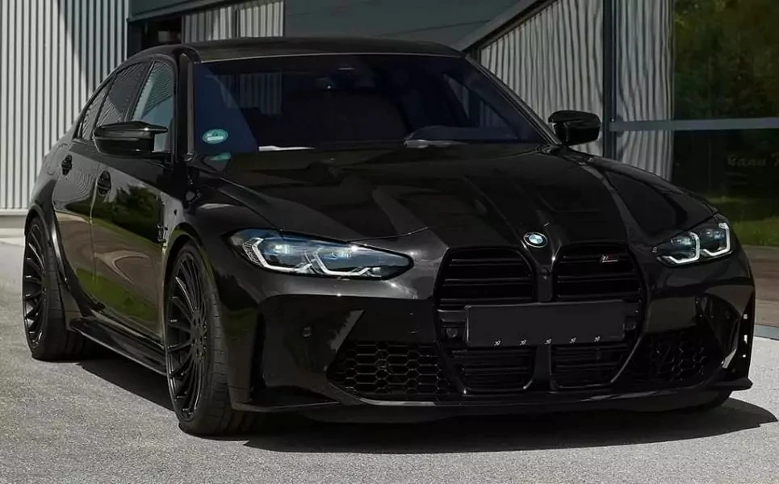
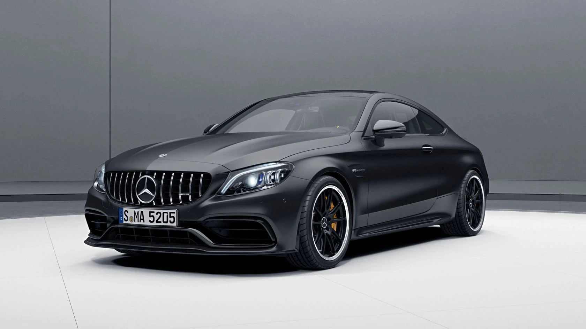
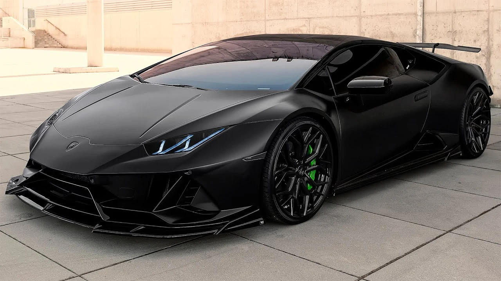

- M3 G80
- Mercedes-Benz C-class
- Lamborghini Huracan EVO
Sedan:

The M3 is a rear-wheel drive 4 door with 5 seats, powered by a 3.0L TURBO 6 engine that has 353 kW of power (at 6250 rpm) and 550 Nm of torque (at 2650 rpm) via a Six-speed Manual. BMW claims the M3 G80 uses 10.1L/100km of Premium Unleaded Petrol in the combined city and highway cycle while putting out 231g of CO2.

The Mercedes C 63 AMG has a naturally aspirated eight cylinders in V longitudinal front engine providing a maximum torque of 600 Nm available from 5000 rpm and a maximum power outpup of 457 PS available at 6800 rpm transmitted to the 18 inch rear wheels by an automatic 7 speed gearbox.
Supercar:

The Huracán EVO is the evolution of the most successful V10-powered Lamborghini ever. The result of fine-tuning and refining existing features, combined with new design solutions that increase performance, the car stands out for its ability to anticipate and cater to the driver’s behavior, expectations and desires.
Check more